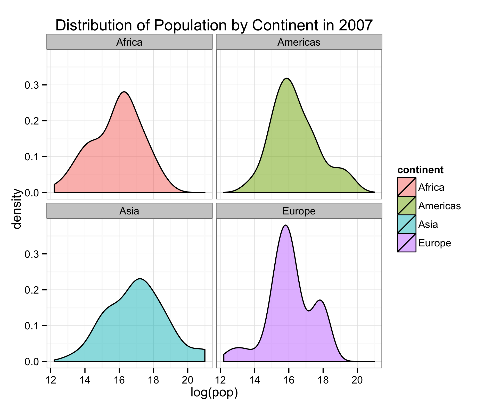

Data
Data answers the following three questions:
- What happened?
- Where are we going?
- What to do now?
Data Analysis
Data itself has no meaning. It's what we can extract from it that gives it meaning. This requires analysing the data.
That being said, personal bias and deceit can always play a role, which is another reason to learn to understand where the results came from!


Why Programming?
You are the creator. You are God.
- Control operations
- Analyse anything of your choosing
- Automate a time-consuming task
- Create your own product
- Make a programming language...
... with Arnold quotes!

R Language
R is a statistical programming language that is:
- open source ==> freely available
- highly compatible for data analysis with many types of data structures
- simple and quick (relatively) to learn and use
- highly compatible with other languages (it was made from C and Fortran)
- growing in popularity and use (you'll see why)
Let's set up!
Object-oriented Programming (OOP)
- Take a number, data set, ANYTHING (I'll chose to say "Hello World")
- Think of a name to call it (I'll call mine, My.Object)
- Feed it into an object by it's name using "<-""
- Now your information is saved into the object given by its name for you to call in the future
Example:
My.Object <- "Hello world"
My.Object
## [1] "Hello world"
Functions
R has many build-in functions that perform tasks for you, saving you the work of programming them yourself.
Examples of functions are:
date()data()is.numeric()
Many functions are available within packages, which R keeps in a its library. We can easily check what we have with the function library(). For special (most) packages, we must download them from a magical place called Cran.
Cran
- Cran is the massive repository online which houses all the fully developed R packages.
- Let's say I want to read and analyse stock data through an API (more on API's later). I can search on Google and find that the package "quantmod" does the trick! So, I can install the package, check the library and read it into R from the library anytime I need it (must be done once per session). In these packages are many useful functions!
# I can make comments with hash tags
install.packages("quantmod") # install
library() # check library
library(quantmod) # load the package in this R session
What are the functions!? I need help!
Firstly, Cran has all the tutorials you need online in a pdf format for each function. If thats not enough, Stack Overflow is a great great resource of fellow programmers. If you have a question, I can almost guarantee you'll find it there. More simply, we can do the following (assuming we know the function):
?getSymbols
?matrix
?date
Types of objects
- numeric, integer, string:
- x <- 5.09, y <- 2, z <- "cool"
- vectors:
- vec <- c(2, 5 , 9)
- matrices:
- mat <- matrix(c(1,2,3,7,7,8), nrow = 2)
- data.frames:
- df <- data.frame(hello = rep("hello", 4), int = seq(1, 4, by = 1), num = rnorm(4))
- lists:
- mylist <- list(mat, df, vec)
It's all about data.frames
- R's data.frames can handle data of any type
- When R reads data in, it uses data.frames so that you're data stays in a comfortable format
- numbers stay numeric, factors stay as factors, etc.
- Next, we try reading in data.
First, try Excel
Open the Sightings.csv file from the website in Excel. Thoughts?
Reading data
Download the Sightings.csv from the website and save it into your working directory. The working directory is where R sees your files.
getwd() # check where R is looking for your files (and if Sightings.csv is there)
data <- read.csv("Sightings.csv") # read in the csv file
head(data) # avoid seeing all the data at once
Examining the data
Data is messy and usually contains way too much information to see with the naked eye. Luckily, R has built in functions that make this more of a human task:
- str(data)
- head(data); tail(data)
- dim(data)
- is.data.frame()
What do these functions tell you abou the data? So long Excel!
Disseminating the Data
We can pull what we need from the data using simple operators:
sightings <- data$sightings # gives us the column (vector) called sightings
sightings2 <- data[,2] # same as above, but specifying column number [row, column]
obs <- data[dim(data)[1], 1] # what does this do?
obs2 <- max(data$sightings) # or max(sightings) as we alread made the sightings object
Functions within functions are possible! Remember "?function_name" to learn about the funtion.
Logical Operators
- Logical operators consist of ">", "<", "==", ">=", "<=", "!". Look familiar?
which(data$sightings > 500) # what does this tell you? try ?which
which(data$sightings == max(data$sightings))
which(data$id == dim(data)[1])
newdata <- data[which(data$sightings > 100),]
Challenge #1
- What is the year of the first sighting?
- Which year had the most sightings?
- which month(s) had less than 5?
Excel Challenge
- Construct a data table that summarises the number of sightings greater than 100 between the
dplyr - the mother of data analysis packages
dplyr is build off of a base R package that provides convenient and powerful tools for wranging data into the format you desire. It uses natural "verbs" and piping operators to keep things fast and efficient. What does that mean?
install.packages("dplyr")
library(plyr) # base package must be loaded first
library(dplyr)
- select() - select the variables (columns) of the data you are interested in.
- filter() - filter the rows of the data.frame utilising your logical operators >,<,>=,<=, and == according to the data of interest.
- group_by() - group the data according to some category, for instance, group all data by continent.
- summarise() - Summarise multiple values to a single value. For example, the mean GDP or total GDP of each continent, where the continent group was created using the function group_by().
- mutate() - mutate or transform one variable into another using some function. For example, create a new variable (column) that is a combination of two other variables (population and GDP).
Let's give them a try
The dplyr piping operator is "%>%", which you can think of as "and then". Let me show you:
- select the year and sightings columns "and then" group the data according to the year "and then" summarise each year by the mean sightings.
data.new <- data %>% # specify data you are using "and then"
select(year, sightings) %>% # select the year and sigtings columns
group_by(year) %>% # group data according to year
summarise(mean.sightings = mean(sightings)) # select the date and sightings columns
- Let's remove those years where one is sighted
data.update <- data.new %>%
filter(mean.sightings != 1)
- How about by month?
Visualisation
R has base plots:
plot(mean.sightings ~ year, data.update)

Quick Challenge
- What is the year in which sightings erupt?
- Is there a month where sightings are more prominent?
This is awkward... the plot is ugly...
ggplot2 :)
install.packages("ggplot2")
ggplot2
- R's plots don't follow the object orientation! I can't save them for later.
- ggplot uses data.frames and makes visually appealing plots
- works well with dplyr, and has the same intuition (thank you Hadley!)
How ggplot2 works
myPlot <- ggplot(data.frame, aes(x, y, ...)) + ?
- I call my plot myPlot (now it's an object :) )
- I place my data.frame in
- I specify the aesthetics (parameters specifying the plot)
- Then, I must specify what my plot will be (scatter, line, histogram, etc.)
Example
library(ggplot2)
myPlot <- ggplot(data.update, aes(x = year, y = mean.sightings)) + geom_line(colour = "blue")
- But I want to add more! Then let's just add properties to the object!
myPlot2 <- myPlot +
geom_point(colour = "red") + theme_bw() +
ggtitle("Sightings by Year") +
geom_vline(xintercept = 1994, linetype = "dashed")

Can you do better?
- check the resources for ggplot2 to learn the types of plots and its capabilities.
- there are many other types of visualisations you can handle with ggplot
A more flavourful data set - Gapminder
- Download the .tsv into your working directory
- Read in gapminder
gapminder <- read.delim("Workshops/Data_Analysis_Intro/Data/gapminder.tsv")
## Warning in file(file, "rt"): cannot open file
## 'Workshops/Data_Analysis_Intro/Data/gapminder.tsv': No such file or
## directory
## Error in file(file, "rt"): cannot open the connection
- why read.delim? What is a .tsv vs .csv?
- Examine the data using the functions you used previously
Example
# dplyr wrangling
gDat <- gapminder %>%
select(continent, year, pop) %>%
filter(year == 2007) %>%
filter(continent != "Oceania") %>% # what am I doing here? Why?
group_by(pop) # Why group by population?
# ggplot plotting
p1 <- ggplot(gDat, aes(log(pop), fill = continent)) +
geom_density(alpha = 0.5) + # what does alpha do?
facet_wrap(~continent) +
ggtitle("Distribution of Population by Continent in 2007") +
theme_bw()
print(p1)
